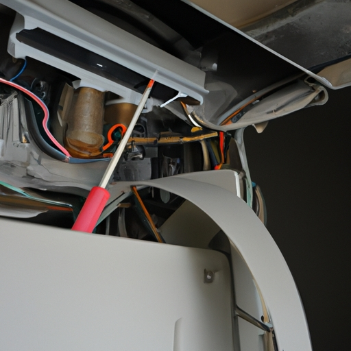

News
Furnace Repair Austin
Furnace Repair Austin
Emergency Furnace Services
24/7 Emergency Response
Same-Day Repair Services
After-Hours Support
Emergency Parts Replacement
Preventive Maintenance
Preventive Maintenance
Annual Tune-ups
Filter Replacement
System Inspection
Performance Testing
Common Furnace Problems
Common Furnace Problems
Heating Element Issues
Thermostat Malfunctions
Blower Motor Problems
Pilot Light Failures
Professional Technicians
Professional Technicians
Licensed HVAC Experts
Service Warranties
Repair Cost Estimates
Certified Training
About Us
Contact Us
ABA Heating and Cooling
How to Tell if Your Austin Furnace is About to Fail (7 Warning Signs Most Homeowners Miss)
Apr 20, 2025
Poor air quality and increased dust levels in your home can be telltale signs that your Austin furnace is struggling.. When you start noticing more dust settling on your furniture or find yourself constantly wiping down surfaces, your furnace might be crying out for help.

Common Furnace Problems and DIY Troubleshooting Tips for Austin Homeowners
Apr 20, 2025
When to Call a Professional vs.. DIY Repairs: Making the Right Choice for Your Furnace While many Austin homeowners are comfortable handling basic furnace maintenance and minor repairs, knowing when to call a professional is crucial for safety and efficiency.
What is the Average Cost of Furnace Repair in Austin?
Apr 20, 2025
Choosing a Reliable Furnace Repair Service in Austin When your furnace breaks down in Austin, selecting the right repair service is crucial for both your comfort and wallet.. Start by seeking recommendations from friends, family, and neighbors who have had recent furnace repairs.
What is the Most Common Furnace Problem in Austin Homes?
Apr 20, 2025
When to Call a Professional HVAC Technician While some furnace issues can be resolved through simple DIY troubleshooting, there are specific situations when calling a professional HVAC technician in Austin is absolutely necessary.. If you notice unusual sounds like banging, squealing, or rattling coming from your furnace, this could indicate serious mechanical problems that require expert attention.
How to Save $1,247 on Furnace Repairs in Austin (The Secret HVAC Companies Dont Want You to Know)
Apr 20, 2025
When to Replace vs Repair Your Furnace: Making the Smart Financial Choice Making the decision between repairing or replacing your furnace can be tricky, especially when trying to save money in Austins competitive HVAC market.. While a repair might seem like the cheaper option upfront, its not always the most cost-effective solution in the long run. Consider replacing your furnace if its over 15 years old, as newer models are significantly more energy-efficient and can save you hundreds on utility bills annually.